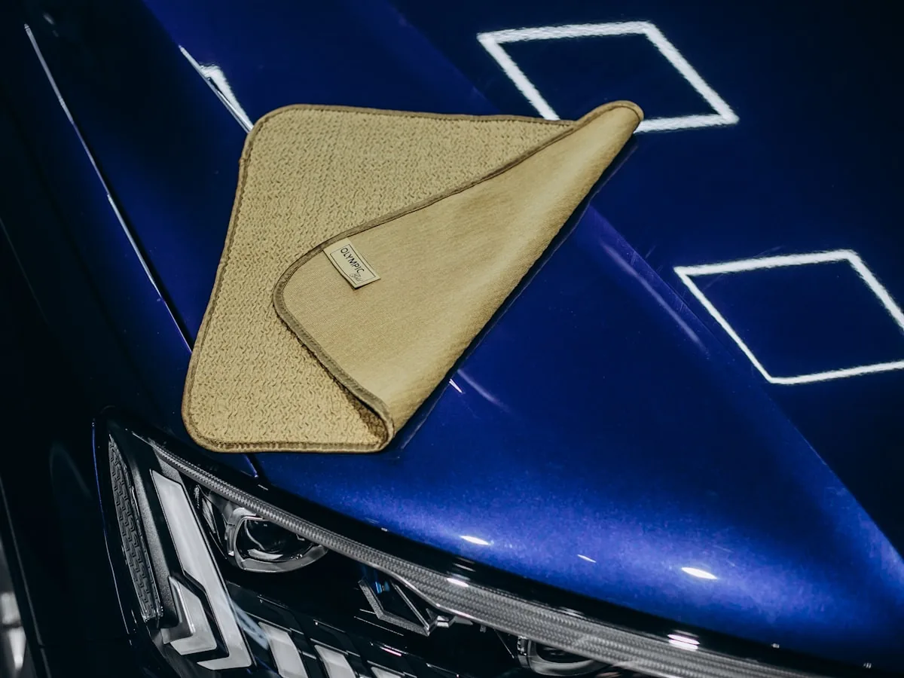
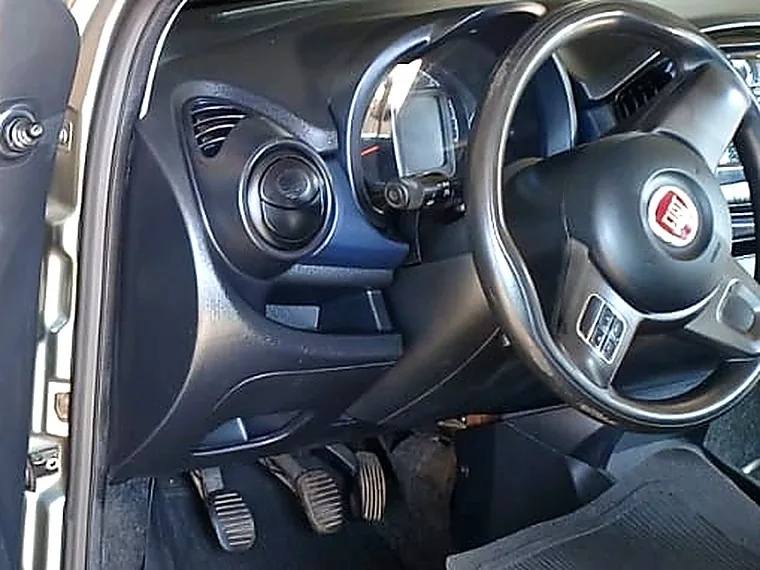
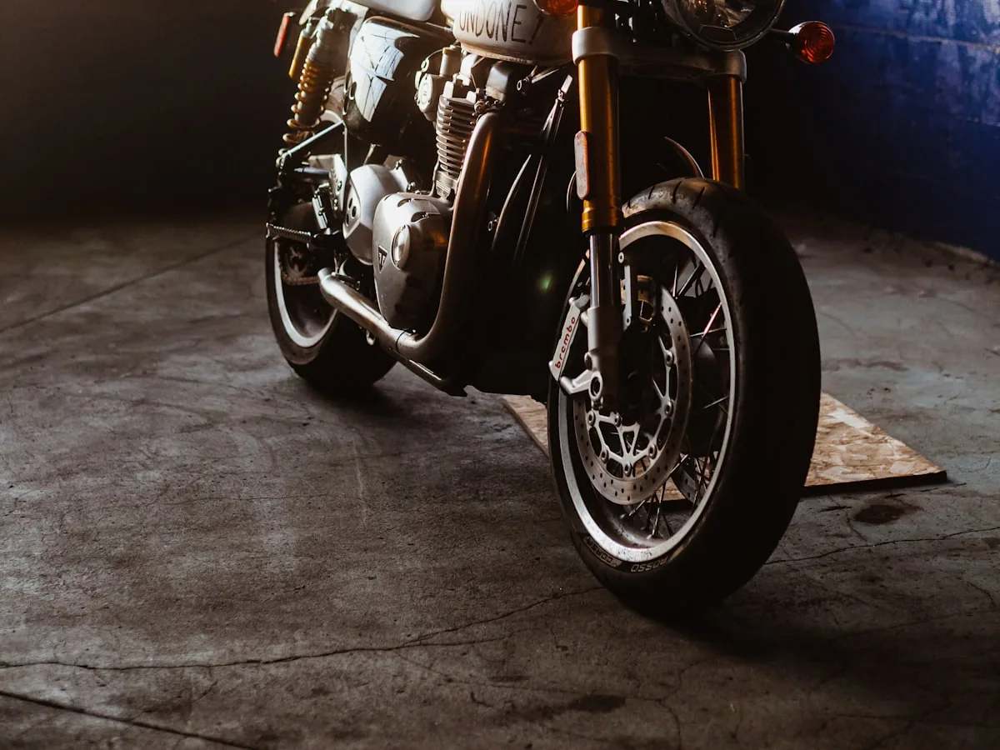

Fotos
Um pouco do nosso trabalho
Lavagem completa, rodas e pneus, limpeza interna, motor, moto e o acabamento premium Vonixx.


 VONIXX
VONIXX





Parte das imagens ainda é ilustrativa. Em breve, mais fotos dos carros atendidos aqui no Beira Rio.
Gostou do que viu?
Chame no WhatsApp e agende a lavagem do seu carro.